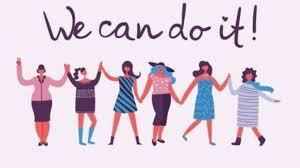

This site is created to inform and empower women to strive above the social norms. Do not let societal norms, religious beliefs or anyone get in the way of who you are , what you want to be and most importantly who you want to become. We are here for you!
As women, we are often told what we can and cannot do. We often get the shorter end of the stick. Growing up, I was always told that I need to take care of my younger brother because I am the older child, the more responsible one. I would have to take on all the responsibilities, yet I am not as free as my sibling. Because I am female, I was told by my parents that i'm not allowed to attend parties. I was told I cannot major in computer science because not many females are in that field. Instead, my father told that I needed to major in Business and so I did.
At my first job, for the same position, I was paid fairly less than my male coworkers. We went to the same college, have the same degree, but yet I was paid less. No matter how much better my performance was, I still got paid less but that didn't stop me from doing my best at work. To make myself more distintive from my make other coworkers. I took extra classes related to the field of work I was doing and read cases and files pertaining to housing. This helped me to be more knowledgeble about the field and be more efficient in what I did. Eventhough I had to do the extra work to gain the equal pay, it was a start.As women we often times need to work harder than our male peers. But, do not give up, you have it within you to strive.